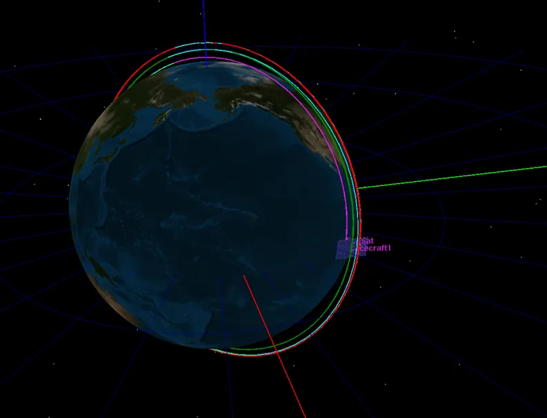

Six projects across research, aircraft design, orbital mechanics, simulation, mechanical CAD and industry practice — the through-line is moving between the model and the physical thing, then working out why they disagree.
Project. 01Graduation Thesis — School of Mechanical & Manufacturing Engineering, UNSWRANS & DES · Mach 3.0
Supersonic Bluff Body Wake Dynamics
High-fidelity compressible-flow CFD of a bluff body wake at Mach 3, with structured mesh refinement and spectral / statistical post-processing in MATLAB. Detached Eddy Simulation resolved the recirculation and vortex-shedding structure at a fidelity RANS couldn't reach — reducing predicted wake thickness by 34.5% against baseline turbulence models and holding up against literature and experimental benchmarks.
ANSYS FluentMATLABDES / RANSCompressible CFD
Detached Eddy Simulation — wakeTime-resolved density field through the recirculation and shedding region.
Small geometric changes at the trailing edge change the whole downstream picture.
RANS vs. DES — wake thicknessSimulated schlieren imagery shows what the switch to DES actually bought me: the RANS wake stays smooth and steady, while DES resolves the real turbulent structure. That extra fidelity is what drove the wake thickness down from 1.97 mm to 1.29 mm — a 34.5% reduction.Power spectral density — pressureTracking the pressure spectrum downstream isolates where the wake actually organises into periodic shedding. The energy concentrates between x/d 3.5–6, marking the vortex-shedding region I used to define the dominant Strouhal frequency.
Velocity fluctuation spectraFour probe points through the wake show how the fluctuation energy decays with distance from the body. Both components carry a negative gradient, but the near-wake points (1 and 3) run consistently hotter — the recirculation zone doing what recirculation zones do.Geometry study — injector trailing edgeSwapping a triangular trailing edge for a modified strut halves the wake width for a near-identical subsonic core. A reminder that in supersonic flow, small geometric changes at the trailing edge change the whole downstream picture.
Full-aircraft design study for a two-seat kit-plane, guided by a Request for Proposal specifying range, endurance at altitude, weather adaptability and take-off / landing parameters. Over ten weeks the Wombat Aerospace team developed the Kingfisher 210 — a bush plane built around structural strength, fuel efficiency and ease of maintenance for Australian farmers and recreational pilots.
Role within the project. Led the design and analysis of aircraft Weight & Balance, Stability, internal layout, fuselage and tail-wing AOA. Developed flight-characteristic simulations and assessed compliance with CASA, FAA Part 23 and EASA standards. Used XFOIL, XFLR5, Flow5 and MATLAB for lift, drag and stability analysis, while applying anthropometric and ergonomic data to optimise the internal layout.
Parametric studyThe mean aerodynamic chord (MAC) was one of the hardest aspects to justify. Initial estimates from Raymer and Roskam were progressively refined through weight-distribution and stability analyses, leading to a more detailed aerodynamic assessment — maintaining stability was critical to pilot and passenger safety and to the aircraft's ability to achieve and hold flight throughout its mission. The analysis was iterative, each refinement incorporating better estimates of weight, fuel distribution and propulsion characteristics.
Flight envelopeA flight envelope based on the given criteria and airspeed estimations from Raymer.CG envelopeMATLAB and Raymer's formula for automatic calculation, showing the centre of gravity shifting backwards as fuel depletes.
Flow5 stability simulationConcatenated XFLR5 (2D wing) to Flow5 (full aircraft) for the 3D stability analysis (−2.25° horizontal stabiliser) justification. A systematic approach to finding a suitable CG and stability properties by experimenting with different weight distributions and aerodynamic properties.
Designed an orbital rendezvous mission from Australia — determining launch epoch, manoeuvre ΔV and timing requirements to intercept and remove a defunct Australian satellite in Low Earth Orbit.
GMATMATLABExcelEpoch · ΔV · Rendezvous
GMAT simulation — transfer & rendezvousPropagated trajectory from launch through phasing to rendezvous with the target.
The growing space-debris problem. The increasing number of satellites in orbit is increasing the likelihood of collisions and the quantity of space debris. Existing mitigation strategies — collision avoidance and end-of-life disposal — primarily prevent the creation of additional debris rather than removing objects already in orbit.
A potential long-term consequence is the Kessler Effect, where collisions generate additional debris, increasing the probability of further collisions and creating a cascading hazard for spacecraft operating in orbit. This creates an increasing need for active debris-removal technologies to improve the safety and longevity of future space operations.
Existing debris-removal concepts use a range of technologies — robotic capture mechanisms, nets, harpoons, extendable arms and laser-based systems. These approaches were investigated to determine a suitable concept for the proposed Australian debris-removal mission.

Ground track — proposed missionA conceptual spacecraft mission was developed to perform the entire debris-removal operation. The spacecraft would launch from Australia and execute a sequence of orbital manoeuvres to rendezvous with a defunct Australian satellite in Low Earth Orbit. The mission design considered:
Launch epoch and timing
Orbital parameters
Required manoeuvre ΔV
Transfer trajectory design
Rendezvous timing
Relative spacecraft positioning
Debris capture or removal methodology
Project. 04SimulationIndependent design & research projects
Computational Fluid Dynamics
Simulation work exploring flow behaviour, wake structures and aerodynamic performance across independent design and research projects.
ANSYS FluentOpenFOAMPost-processing
Velocity contour — RANS solution
Pressure distribution — transonic casePressure distribution & streamline in z axisPressure distribution & streamline in y axisPressure distribution & streamline in x axisDensity distributionVelocity streamlines visualisation
Mechanical design and 3D modelling work, from full engine assemblies through to individual components and fabrication-ready drawings.
SolidWorksFusion 360InventorAutoCAD
Turbofan engine — full assembly model
Small turbine modelIntroduction to turbine-engine design.Turbine bladesTurbine blade and internal shaft assembly modelled for 3D printing.Small gearSmooth-edge gear.Fixture & jig designCustom fabrication jig for holding components during welding and assembly.
Produced CAD for cabin reconfigurations and aircraft modifications in Draftsight and SolidWorks, managing concurrent design-documentation workflows across PDM and BOM updates under formal, CASA/EASA-compliant revision control.
DraftsightSolidWorksPDM / BOM
Cabin reconfiguration — drafting
Installation drawingProduction-ready drawing and installation documentation translated from technical requirements, under formal version control.Installation drawingCASA/EASA-compliant revision control applied across every release to ensure engineering accuracy and minimise implementation risk.